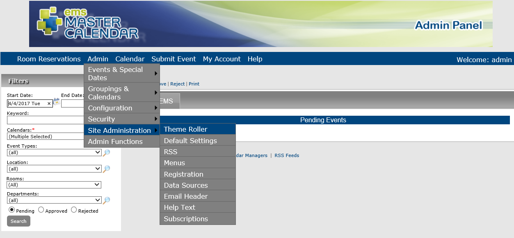

Customize Themes, Colors, and Banners for Your Master Calendar
The theme determines the background color for calendars and section headers on pages in Master Calendar. See Also: Configure Event Icons.
- From the Admin Panel, navigate to Admin > Site Administration > Theme Roller.

- Themes show in the upper left corner of the application. Click the Settings icon on the right for a list of options for customizing your application's appearance.

- Click the theme you prefer in the upper left. Use the menu on the right to customize additional visual elements of the application.
TIPS: You can Pick a Color Scheme or Create Custom Color Scheme by expanding the menus on the right.
- You can upload your organization's custom site banner, which displays at the top of every page on your Master Calendar site, by expanding the Upload Banner menu.


- Click Save.